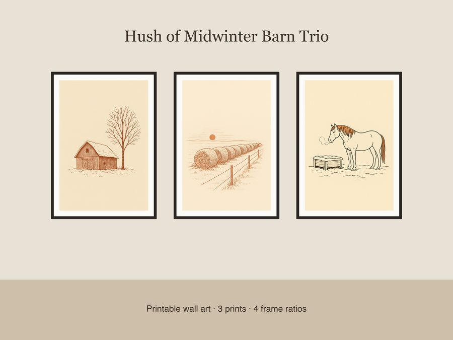

$5.99
View on EtsyBring the quiet stillness of a midwinter morning to your walls with this Hush of Midwinter Barn Trio — three fine single-line ink illustrations on warm cream paper with muted rust accents and generous negative space, perfect for farmhouse and modern-country decor. What's Included: • 3 unique prints: weathered barn silhouette under a bare tree, frost-covered hay bales along a fence at dawn, and a lone horse near a snow-covered trough • Each print in 4 frame ratios: 2x3, 3x4, 4x5, and 11x14 • 12 total high-resolution JPEG files at 300 DPI • Sized for easy printing at home, local print shop, or online printing service How to Use: Download your files instantly after purchase, print on quality paper or cardstock, and pop into your favorite frames. Great for gallery walls, entryways, living rooms, or as a thoughtful gift for the pastoral-scene lover in your life. License: For personal use and small business commercial use (up to 500 physical printed units). Please do not resell, redistribute, or share the digital files themselves. A Note on Process: This design was created by our shop with the help of AI tools as part of our creative process. We describe our art honestly — this is digital illustration work, not hand-drawn or hand-lettered. No physical print or frame is shipped — this is a digital download only. Thank you for supporting our small shop!